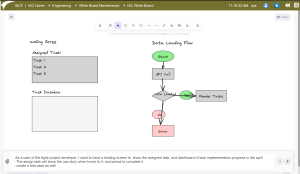
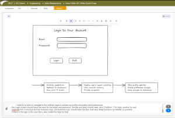

Embracing the Future: How AI is Revolutionizing the Manufacturing Industry with IACF
2024-06-03
The manufacturing industry stands on the brink of a transformative era, driven by the rapid advancements in Artificial Intelligence (AI). As AI continues to shape various sectors, it is poised to play a pivotal role in manufacturing, leading to unprecedented levels of efficiency, innovation, and competitive advantage. At the forefront of this revolution is the Intelligent Application Component Framework (IACF), which leverages AI tools to facilitate seamless digitization and transformation for manufacturing companies.
The Power of AI in Manufacturing
AI's impact on manufacturing is multifaceted, encompassing everything from predictive maintenance and quality control to supply chain optimization and personalized customer experiences. By harnessing the power of AI, manufacturers can streamline operations, reduce downtime, enhance product quality, and respond more swiftly to market demands. However, the true potential of AI lies in its ability to bridge the gap between business requirements and IT application components. This is where IACF's AI tools come into play, providing a comprehensive solution that transforms user stories into tangible, actionable IT applications.Introducing IACF's AI Tools: Transforming Business Requirements into IT Applications
IACF's AI tools are designed to revolutionize the way manufacturing companies approach digital transformation. By leveraging advanced AI capabilities, these tools enable businesses to translate their requirements into functional IT applications with remarkable speed and accuracy. Here’s how IACF's AI tools are making a difference:
1. Streamlining User Story to Realization
One of the most significant challenges in IT application development is ensuring that the business requirements are accurately captured and translated into functional components. IACF’s AI tools automate this process, transforming user stories into detailed specifications that can be directly used for application development. This automation reduces the time and effort required for manual translations, minimizing the risk of errors and ensuring that the final application aligns perfectly with the business needs.2. Enhancing Efficiency and Reducing Time-to-Market
In the fast-paced manufacturing industry, time is of the essence. IACF's AI tools expedite the entire development process, enabling manufacturers to bring their products to market faster. By automating repetitive tasks and streamlining workflows, these tools free up valuable time for IT teams to focus on more strategic initiatives, driving innovation and enhancing overall productivity.